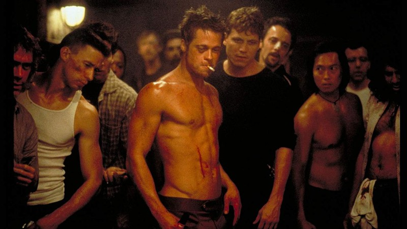
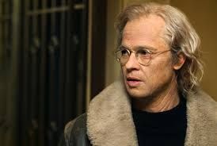
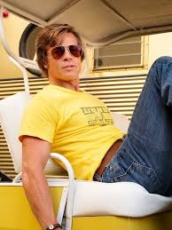

Um homem deprimido que sofre de insônia conhece um estranho vendedor chamado Tyler Durden e se vê morando em uma casa suja depois que seu perfeito apartamento é destruído. A dupla forma um clube com regras rígidas onde homens lutam. A parceria perfeita é comprometida quando uma mulher, Marla, atrai a atenção de Tyler.
Data de lançamento: 29 de outubro de 1999 (Brasil)
Diretor: David Fincher
Indicações: Oscar de Melhor Edição de Som.
Autor: Chuck Palahniuk
Roteiro: David Fincher, Jim Uhls
Adaptação de: Clube da luta

Benjamin Button é um homem que nasce idoso e rejuvenesce à medida que o tempo passa. Doze anos depois de seu nascimento, ele conhece Daisy, uma criança que entra e sai de sua vida enquanto cresce para ser dançarina. Embora tenha todos os tipos de aventuras incomuns, sua relação com Daisy o faz acreditar que os dois se encontrarão no momento certo da vida.
Data de lançamento: 16 de janeiro de 2009 (Brasil)
Diretor: David Fincher
Indicações: Oscar de Melhor Ator.
Autores: F. Scott Fitzgerald, Eric Roth, Robin Swicord.
Durante a Segunda Guerra Mundial, na França, judeus americanos espalham o terror entre o terceiro Reich. Ao mesmo tempo, Shosanna, uma judia que fugiu dos nazistas, planeja vingança quando um evento em seu cinema reunirá os líderes do partido.
Data de lançamento: 9 de outubro de 2009 (Brasil)
Diretor:Quentin Tarantino
Indicações: Prêmio de interpretação masculina.
Roteiro: Quentin Tarantino
Em 1841, Solomon Northup é um negro livre, que vive em paz ao lado da esposa e filhos. Um dia, após aceitar um trabalho que o leva a outra cidade, ele é sequestrado e acorrentado. Vendido como se fosse um escravo, Solomon precisa superar humilhações físicas e emocionais para sobreviver.
Data de lançamento: 21 de fevereiro de 2014 (Brasil)
Diretor: Steve McQueen
Indicações: Oscar de Melhor Filme, Oscar de Melhor Ator.
Autor: Solomon Northup
Adaptação de: Doze Anos de Escravidão

Em 1969, Rick Dalton é um ator de TV em declínio que tenta voltar à vida de fama e sucesso em Hollywood ao lado de seu amigo e dublê, Cliff Booth. No processo, eles cruzam com muitas pessoas influentes da indústria cinematográfica, como os novos vizinhos de Rick, o casal Sharon Tate e Roman Polanski, e acabam se envolvendo involuntariamente com a família Manson.
Data de lançamento:15 de agosto de 2019 (Brasil)
Diretor: Quentin Tarantino
Indicações: Oscar de Melhor Direção de Arte
Roteiro: Quentin Tarantino